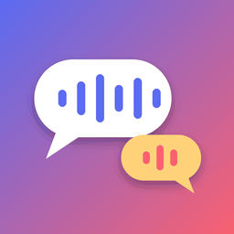

TalkMeter
Every back-and-forth builds a brain.
TalkMeter listens during everyday moments and estimates how many words you say, how many sounds your little one makes, and how many back-and-forth turns you share. It all happens on your iPhone. Nothing is recorded or uploaded.
Help & contact
Questions, ideas or problems? Open a support request and we'll get back to you.
Subscriptions: manage or cancel anytime in iPhone Settings › your name › Subscriptions. To restore a purchase on a new phone, open TalkMeter › Settings › Restore purchases.
Counts look off? Add each grown-up's voice in Settings › Voices, keep the phone within a few metres of your child, and turn the TV off for the cleanest picture.
Erasing data: Settings › Erase all TalkMeter data, or delete the app. There's no account and nothing stored on our side.
Privacy policy · Terms of use (Apple standard EULA)
TalkMeter offers everyday estimates for encouragement. It is not a medical device and does not screen for or diagnose speech or language delays.